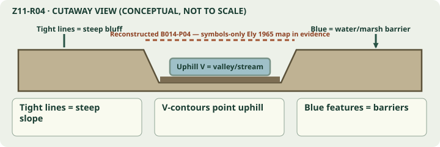

Z11-R04 · Navigation, weather and rescue · Reconstruction draft
Read elevation contours, low ground and water barriers
Translate brown contour spacing and blue hydrography symbols into slope steepness, flood channels and wet-ground detours.
Lineage · B014 reconstruction · r01 slot R04 (original B014-P04 missing)
When it applies · Pre-trip terrain study and dry-land map reading; reconstructs missing B014-P04 using conceptual contours and Ely 1965 symbols reference.
Equipment · Topographic map with contour interval, pencil and optional magnifying glass.

Actions
- Read index contours and spacing to judge slope steepness: closely packed lines mean steep bluffs or cliffs, while wide spacing marks flatter benches or valleys.[N02, N03]
- Identify valley V-contours pointing uphill and blue streams, lakes, marshes and intermittent drainages that create wet-footing, flood or ice barriers along a route.[N02, N03, E04]
- Remember that hazards smaller than the map's contour interval (such as 15-foot ledges, deep muck or fallen blowdowns) do not appear on standard topo sheets.[N02]
Failure recognition · Plotting a straight compass line across tight contour cliffs or wide blue marsh symbols assuming flat open walking.[N02, N03, X12]
Verify · Trace your planned route on the map and point out the steepest climb, lowest drainage and every water or wetland crossing before leaving.[N02, N03, ED]
Stop or change course · When actual terrain shows steeper drop-offs, deeper wetlands or higher water than the map suggests, trust the ground and reroute safely.[N02, N10, ED]
Evidence and editorial notes
- E04 · NWS · Flood Safety: Key Points for Camping and Hiking (agency PDF)
- Section: Before and during camping; know your surroundings · Conditions: Stream valleys and runoff channels subject to flash flooding
Support: Choose higher ground away from water channels. Rain far upstream can drive rapid flooding.
Limitations: Dry streambeds and gentle swales can flood rapidly without local rainfall. · Conflicting evidence: None; aligns with NWS-FLOOD.
Editorial note: Core hydrological exclusion rule for shelter placement. · Specialist reviewer: Emergency management and hydrology
Primary source · checked 2026-11-24 - N02 · USGS · Topographic Map Symbols (agency PDF)
- Section: Topographic Map Symbols > Contours, Water, Vegetation and Boundaries · Conditions: Interpreting standard USGS 1:24,000 and US Topo map sheets
Support: Contour spacing indicates slope steepness, index contours give elevation values, blue features mark water/wetlands and standard symbols distinguish roads, trails, cliffs and marshes.
Limitations: Small terrain hazards (boulders, undercut banks, fallen timber, thin ice) fall below map contour interval resolution. · Conflicting evidence: None; anchors terrain and contour interpretation cards.
Editorial note: Explains contour reading alongside map-resolution limitations. · Specialist reviewer: Cartography and search and rescue
Primary source · checked 2026-11-24 - N03 · USGS · What is a Topographic Map (current web edition)
- Section: What is a Topographic Map > Contours and Relief · Conditions: Matching three-dimensional terrain shapes to two-dimensional contour lines
Support: Closed contour rings denote peaks or depressions (hachured), V-patterns point uphill in valleys/drainages and wide spacing marks gentle slopes while tight spacing marks cliffs or steep grades.
Limitations: Dense forest canopy or snow drifts can obscure subtle terrain features shown on the map. · Conflicting evidence: None; core topographic terrain-association evidence.
Editorial note: Supports ridge, valley, saddle and handrail terrain-interpretation cards. · Specialist reviewer: Navigation and cartography
Primary source · checked 2026-11-24 - N10 · NWS · Turn Around Don't Drown (current web edition)
- Section: Turn Around Don't Drown > Flooded Crossings and Terrain Detours · Conditions: Navigating around flooded streams, washes and submerged roads
Support: Water barriers and flooded crossings conceal washed-out banks, swift undercurrents and deep holes; detour along verified dry high-ground routes or hold in a safe elevated spot.
Limitations: Applies equally to foot and vehicle navigation. · Conflicting evidence: Aligns with B014-P12 and T07.
Editorial note: Connects navigation rerouting to flood and water-barrier boundaries. · Specialist reviewer: Search and rescue and emergency management
Primary source · checked 2026-11-24 - X12 · US EPA · What is a Wetland (current web edition)
- Section: What is a Wetland > Bogs, Fens, Swamps and Marshes · Conditions: Upper Midwest boreal bogs, marshes, beaver ponds and coastal wetlands
Support: Wetlands feature saturated hydric soils, floating vegetation mats (quaking bogs), hidden channels and fluctuating water tables that conceal deep muck, unstable footing and slow-draining floodwaters.
Limitations: Winter ice over bogs and wetlands is especially erratic due to decaying organic heat and seepage. · Conflicting evidence: Aligns with B014-P12 and NPS-WETLAND.
Editorial note: Core wetland terrain and quaking-bog hazard evidence in Z12. · Specialist reviewer: Wetland ecology and search and rescue
Primary source · checked 2026-11-24

Source lineage · B014 reconstruction · r01 slot R04 (original B014-P04 missing) · Classification · Reconstruction draft.